East Blue
East Blue (東の海イーストブルー, Īsuto Burū) est une zone maritime du monde de One Piece et le lieu des 6 premiers arcs de la série. East Blue peut être considéré comme un océan, composé de quelques îles dispersées et une frontière avec Red Line. C'est la mer considérée comme la plus "faible" dans le monde de One Piece, étant donné que de nombreux facteurs préjudiciables aux autres mers (spécialement dans La Route de tous les Périls où les 4 mers sont unies) sont rassemblés ici.
Information Historique
Loguetown, est la ville d'East Blue la plus proche de Grand Line et a été le lieu de naissance du défunt Roi des Pirates, Gol D. Roger. Elle est également devenue le lieu où il a été exécuté, et ce sont les paroles prononcées par Roger juste avant sa mort sur l'échafaud qui ont déclenché la grande vague de piraterie. Elle est devenue un lieu de halte pour les pirates qui se dirigent vers Grand Line. Cette situation a pris fin lorsque Smoker fut désigné comme le protecteur de la ville, mais cela pourrait très bien recommencer une nouvelle fois car Smoker a quitté son poste depuis pour tenter de capturer Luffy sur Grand Line.
Lieux se trouvant à East Blue
| 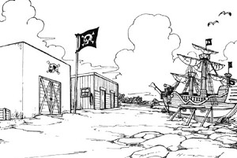 | 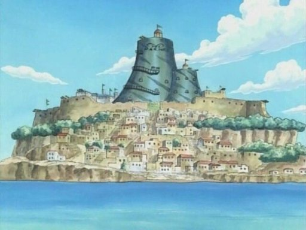 | 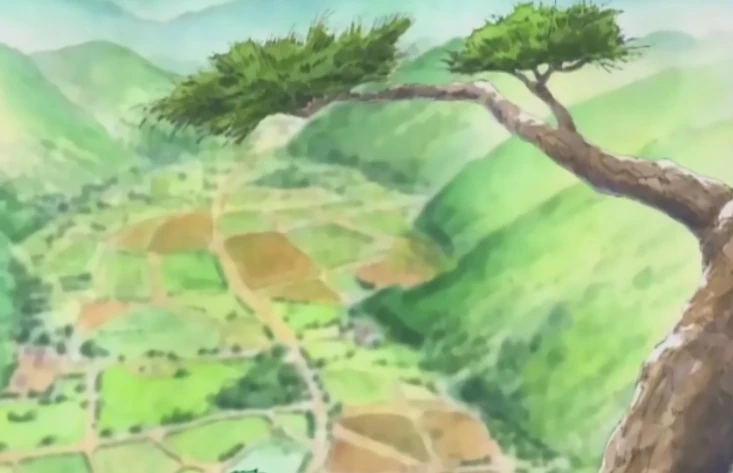 | 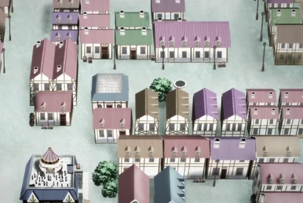 |  |
|---|---|---|---|---|
| Île de Goat | Shells Town | shimotsuki village | Archipel des Orgao | Île des Animaux Rares |
| 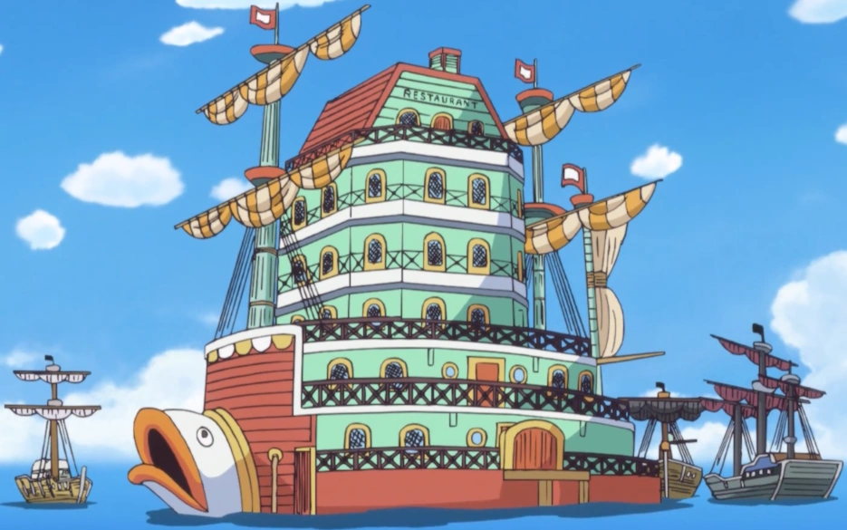 | 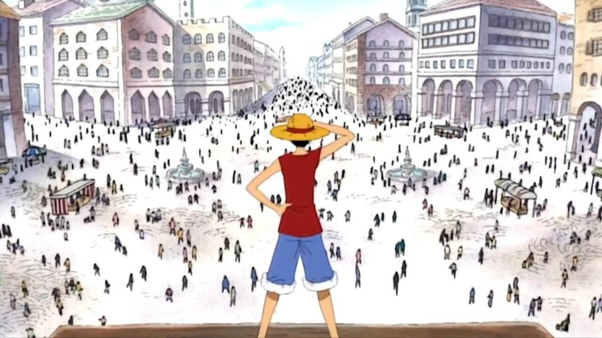 | 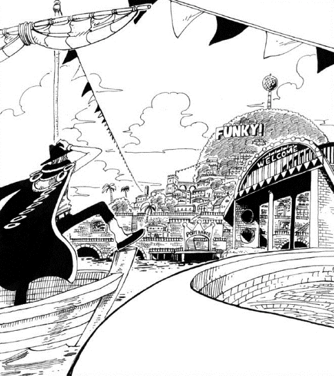 | 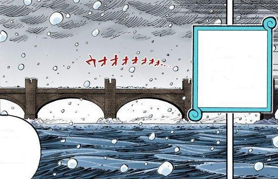 | 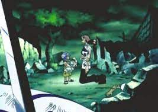 |
| Baratie | Loguetown | Mirrorball | Tequila Wolf | Royaume d'Oykot |
| 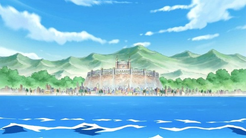 | 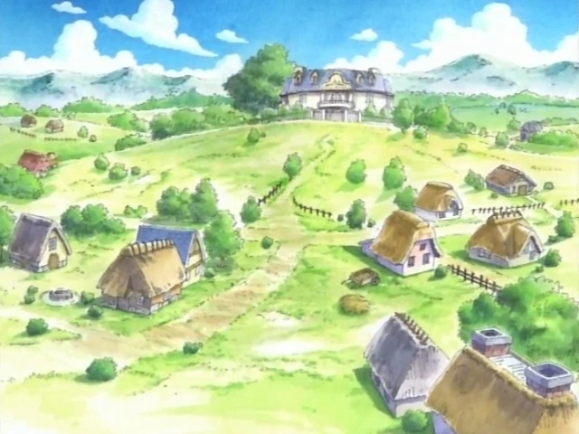 | 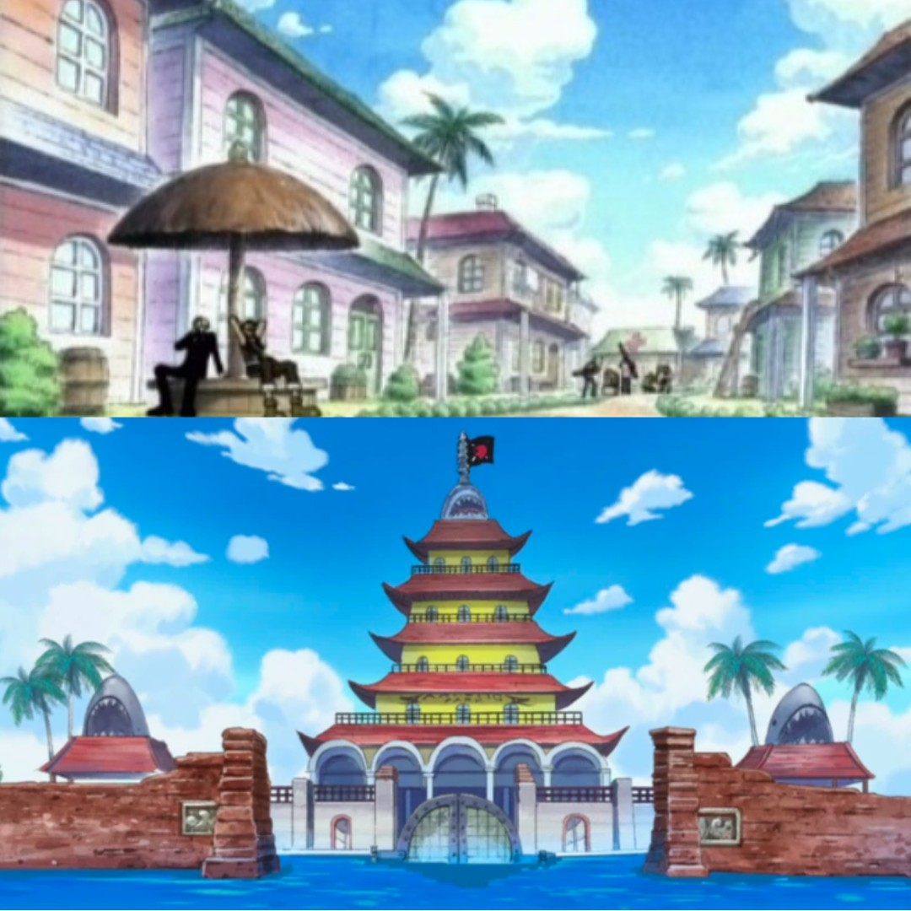 | 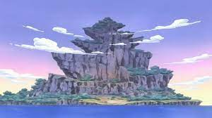 | |
| Île de Dawnt | Archipel des Gekko | Archipel de Konomi | Île du Vaisseau de Guerre |